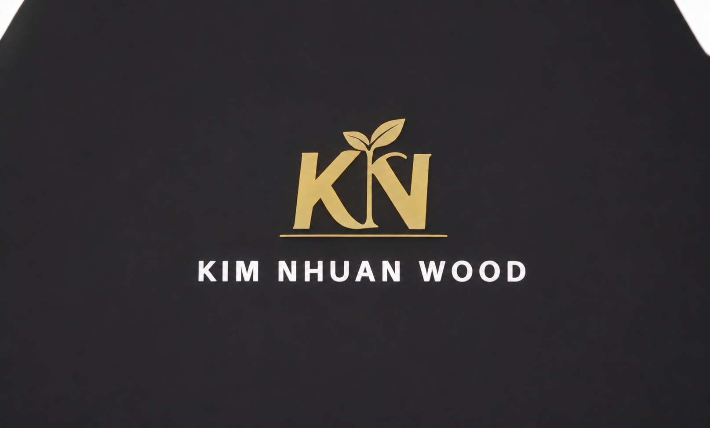
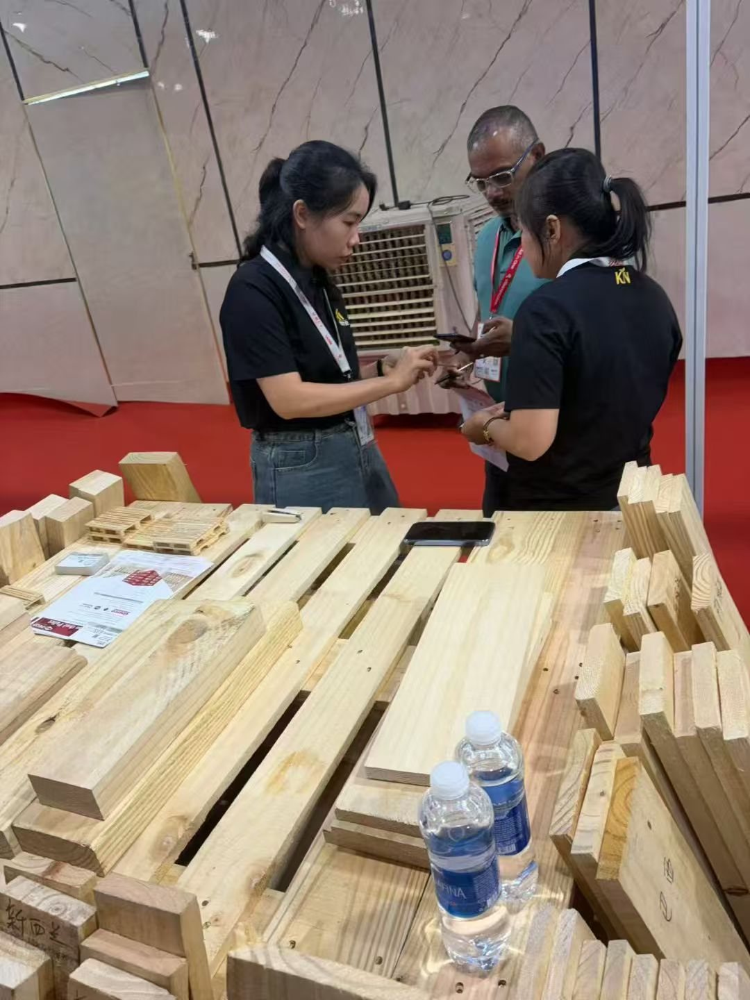
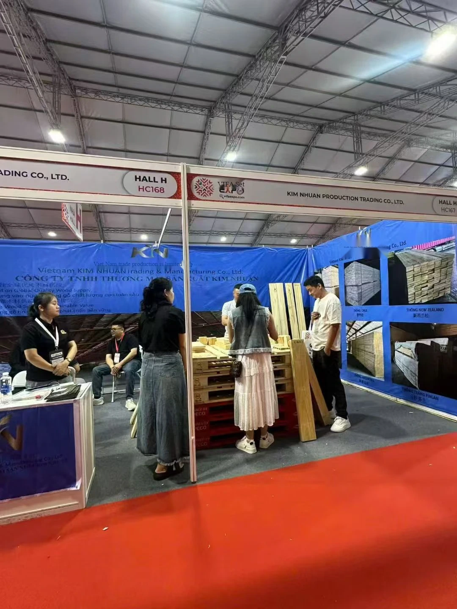

VIETNAM · PRODUCTION · TRADING
KIM NHUAN WOOD
Kim Nhuan Trading & Production Co., Ltd., Vietnam- PRODUCT
- TIMBER & WOOD
- LOCATION
- VIETNAM
- BUSINESS
- PRODUCTION · TRADING
Identity & workwear · Commission
A company mark that carries through to workwear, so staff are easy to spot on site.
We designed the KN mark for Kim Nhuan Trading & Production Co., Ltd., Vietnam, and extended it to contact cards, shipping labels, an exhibition pass and black and white polo shirts.
Exhibition photographs record how the mark is used on site. Booth design was outside our scope.
Problem
Kim Nhuan produces and trades timber. Its mark had to work on a business card, on a shipping label and on staff moving through a busy trade fair, where it is read at a distance.

Approach
K and N form the body. A leaf at the top refers to timber and growth, and a baseline steadies the mark. Gold gives a reliable first impression in trade and exhibition settings.
COLOUR SYSTEM
We did not repeat the logo as decoration. The contact card is for introductions, the shipping label serves the timber trade, and the exhibition pass helps staff be recognised on site.

KIM NHUAN WOOD
Kim Nhuan Trading & Production Co., Ltd., VietnamVIFA EXPO
The full lock-up sits on the chest so the company name is clear up close. The back carries only the KN symbol, just below the collar and not oversized. Black and white polos follow the same size and placement.


On-site use


Outcome
The team wore the polos while receiving visitors at VIFA EXPO. Our photographs record the mark in use, read up close and at a distance.
View other projects ↗